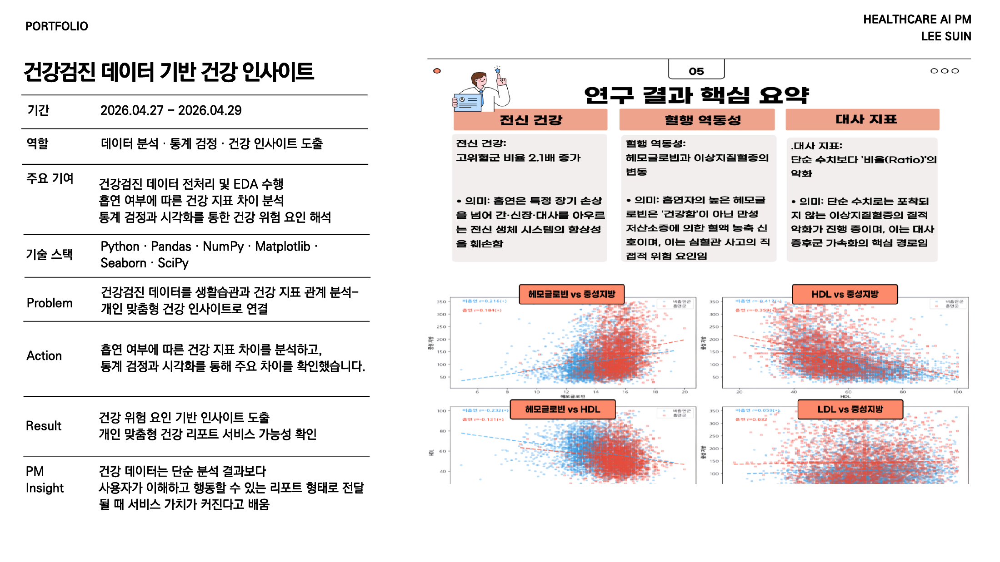

문제
건강검진 데이터를 단순 수치 비교에 그치지 않고 생활습관과 건강 지표의 관계로 해석해야 했습니다. 사용자가 이해할 수 있는 인사이트로 풀어내는 것이 중요했습니다.
실행
흡연 여부에 따른 건강 지표 차이를 분석하고 통계 검정과 시각화를 통해 주요 차이를 확인했습니다. 혈액 지표와 대사 지표를 중심으로 건강 위험 요인을 해석했습니다.
기획 관점
건강 데이터는 단순 분석 결과보다 사용자가 이해하고 행동할 수 있는 리포트 형태로 전달될 때 서비스 가치가 커진다고 느꼈습니다.
